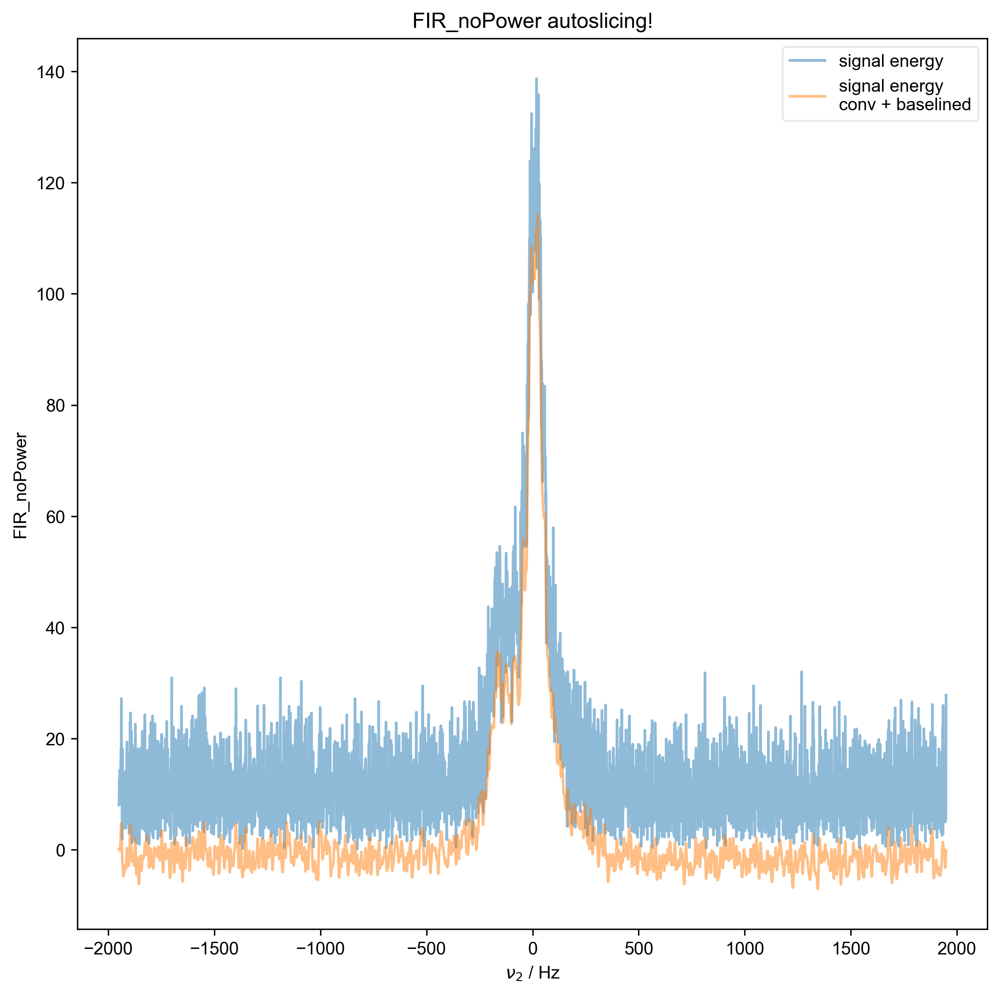
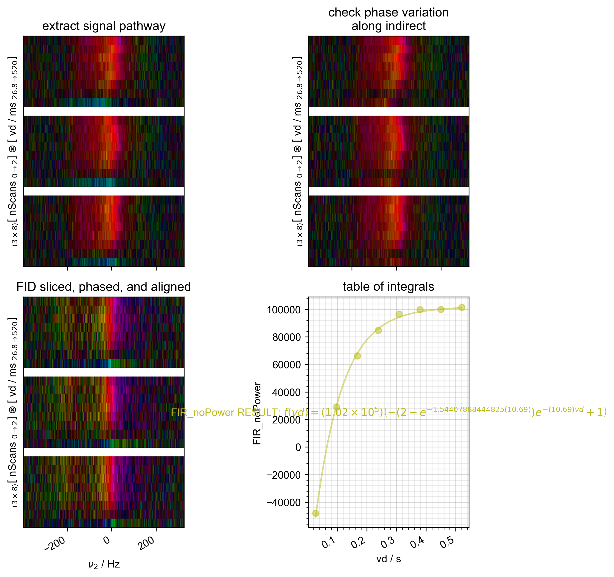
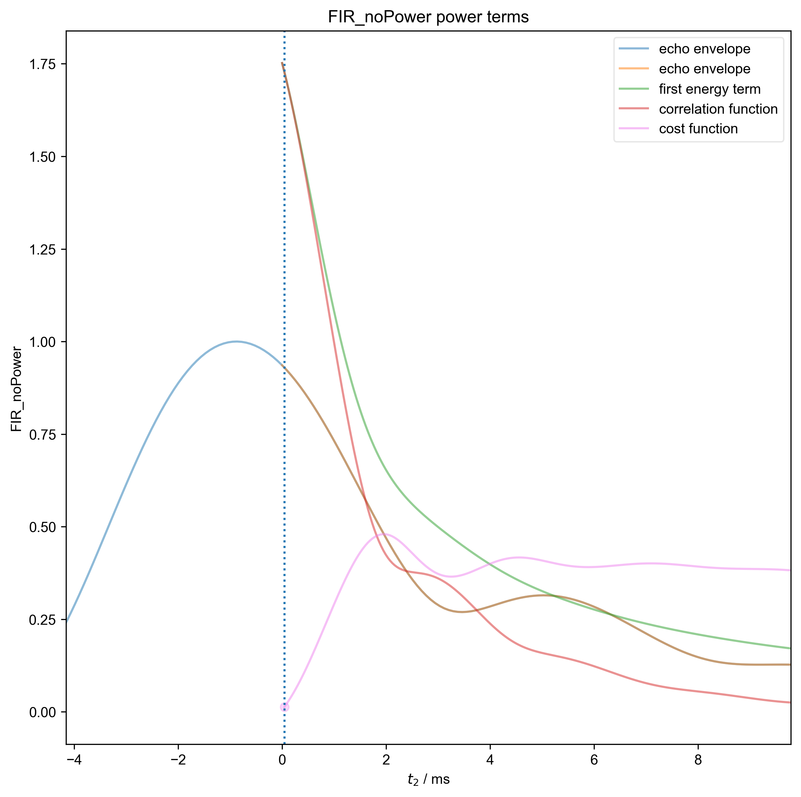
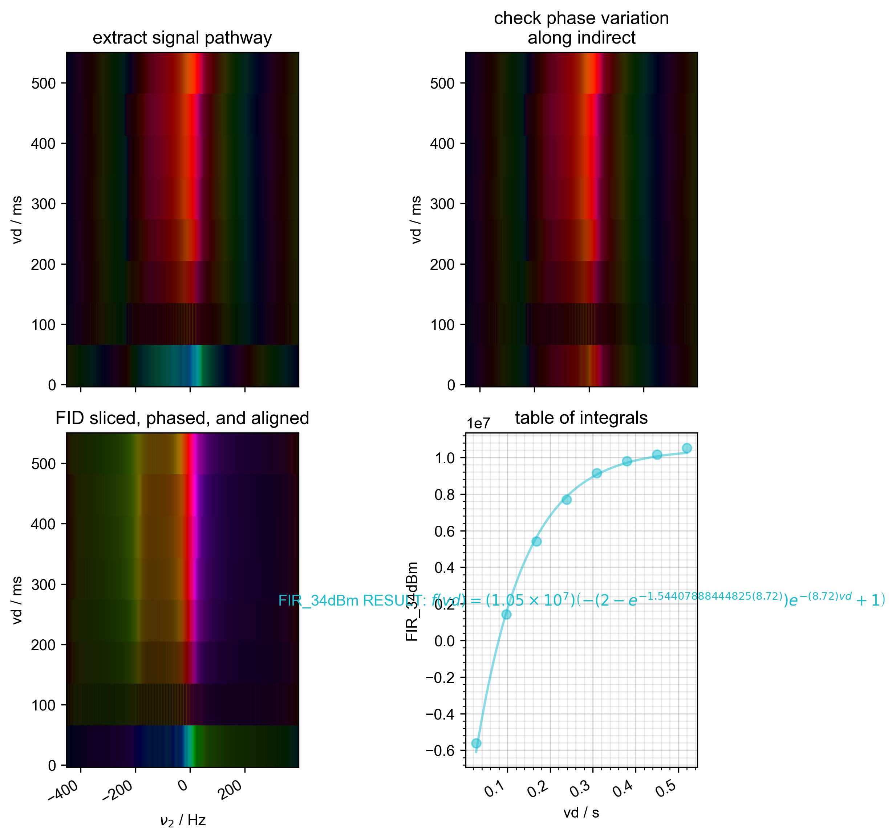
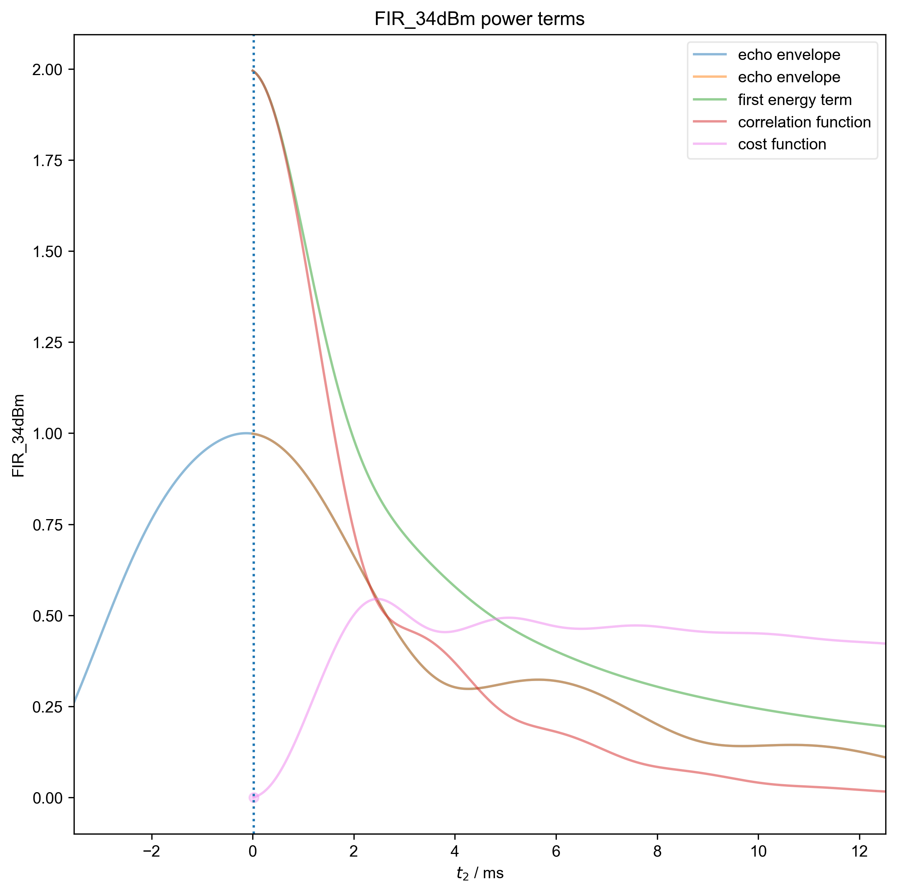
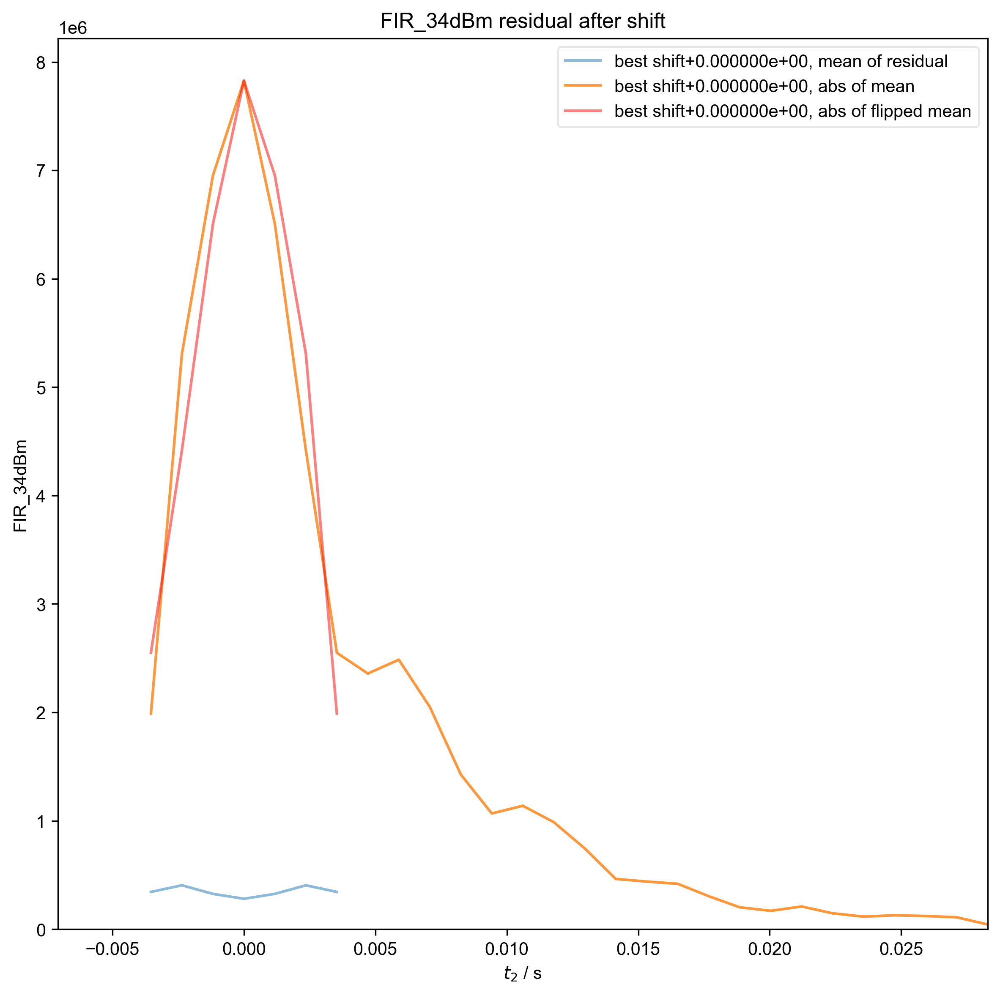

Note
Go to the end to download the full example code
Process FIR experiment¶
Opens .h5 results file, uses rough_table_of_integrals() to roughly
process
dataset including generating a table of integrals
- 
- 
- 
- 
- 
- 
/home/jmfranck/git_repos/pyspecdata/pyspecdata/core.py:9166: RuntimeWarning: invalid value encountered in sqrt
return np.sqrt(arg)
/home/jmfranck/git_repos/proc_scripts/pyspecProcScripts/phasing.py:740: RuntimeWarning: invalid value encountered in divide
cost_func.run(lambda x: x / sqrt(abs(x))) # based on what we'd seen
/home/jmfranck/git_repos/pyspecdata/pyspecdata/core.py:1568: UserWarning: marker is redundantly defined by the 'marker' keyword argument and the fmt string "o" (-> marker='o'). The keyword argument will take precedence.
retval = myplotfunc(*plotargs, **kwargs)
/home/jmfranck/git_repos/pyspecdata/pyspecdata/core.py:1568: UserWarning: marker is redundantly defined by the 'marker' keyword argument and the fmt string "." (-> marker='.'). The keyword argument will take precedence.
retval = myplotfunc(*plotargs, **kwargs)
/home/jmfranck/git_repos/pyspecdata/pyspecdata/core.py:1568: UserWarning: marker is redundantly defined by the 'marker' keyword argument and the fmt string "ko" (-> marker='o'). The keyword argument will take precedence.
retval = myplotfunc(*plotargs, **kwargs)
1: FIR_noPower autoslicing!
2: FIR_noPower Raw Data with averaged scans
3: FIR_noPower power terms |||ms
4: FIR_noPower check covariance test
5: FIR_noPower residual after shift |||('Hz', None)
6: IR fit - normalized |||ms
7: FIR_34dBm autoslicing!
8: FIR_34dBm Raw Data with averaged scans
9: FIR_34dBm power terms |||ms
10: FIR_34dBm check covariance test
11: FIR_34dBm residual after shift |||('Hz', 'ms')
import pyspecProcScripts as prscr
import pyspecdata as psd
import sympy
import matplotlib.pyplot as plt
import numpy as np
plt.rcParams["image.aspect"] = "auto" # needed for sphinx gallery
# sphinx_gallery_thumbnail_number = 2
clock_correction = True
plot_fit = True
thisfile, exptype, post_proc, lookup = (
"240924_13p5mM_TEMPOL_ODNP_1.h5",
"ODNP_NMR_comp/ODNP",
"spincore_IR_v3",
prscr.lookup_table,
)
R1nodenames = [
"FIR_noPower",
"FIR_34dBm",
]
# Because we are going ot want to get both R1 fit values as well as the
# associated errors, we collect the results in an nddata rather than
# just e.g. a list
R1data = psd.ndshape([("power", len(R1nodenames))]).alloc(dtype=np.float64)
with psd.figlist_var() as fl:
for j, nodename in enumerate(R1nodenames):
fl.basename = nodename # this is a good example of how we can
# use basename to make it easy to deal
# with multiple datasets
s = psd.find_file(
thisfile,
exp_type=exptype,
expno=nodename,
postproc=post_proc,
lookup=prscr.lookup_table,
)
indirect = "vd"
direct = "t2"
if clock_correction:
s = prscr.clock_correct(s)
s = s.squeeze()
s, ax_last = prscr.rough_table_of_integrals(s, fl=fl)
# Included signal averaging in rough_table_of_integrals
Mi, R1, vd = sympy.symbols("M_inf R_1 vd", real=True)
psd.logger.debug(psd.strm("acq keys", s.get_prop("acq_params")))
W = (
s.get_prop("acq_params")["FIR_rep"] * 1e-6
+ s.get_prop("acq_params")["acq_time_ms"] * 1e-3
)
s = psd.lmfitdata(s)
s.functional_form = Mi * (
1 - (2 - sympy.exp(-W * R1)) * sympy.exp(-vd * R1)
)
prefactor_scaling = 10 ** psd.det_unit_prefactor(s.get_units("vd"))
s.set_guess(
M_inf=dict(
value=s.max().item(),
min=0.1 * s.max().item(),
max=1.5 * s.max().item(),
),
R_1=dict(
value=0.8 * prefactor_scaling,
min=0.01 * prefactor_scaling,
max=100 * prefactor_scaling,
),
)
s.fit()
s_fit = s.eval(200)
psd.plot(s_fit, ax=ax_last, alpha=0.5) # here, we plot the fit
# together with the
# table of integrals.
ax_last.text(
0.5,
0.5,
f"{nodename} RESULT: %s" % s.latex(),
ha="center",
va="center",
color=s_fit.get_plot_color(),
transform=ax_last.transAxes,
)
if plot_fit: # JF has not reviewed this -- needs to be re-written
# consistently w/ above. Stuff that's not used can
# just be removed
R1data["power", j] = s.output("R_1")
Mi = s.output("M_inf")
fit = s.eval(100)
fit.set_plot_color(s_fit.get_plot_color())
fl.basename = None # because we want the following plot to
# show up together
fl.next("IR fit - normalized")
fl.plot(s / Mi, "o", label=nodename)
fl.plot(
fit / Mi,
ls="-",
alpha=0.5,
label="fit for %s" % nodename,
)
ax = plt.gca()
# I'm not printing anything for 'T1 = ?' as desired in the list of goals, what
# should I be printing? T1 at s.max()?
Total running time of the script: (0 minutes 6.757 seconds)